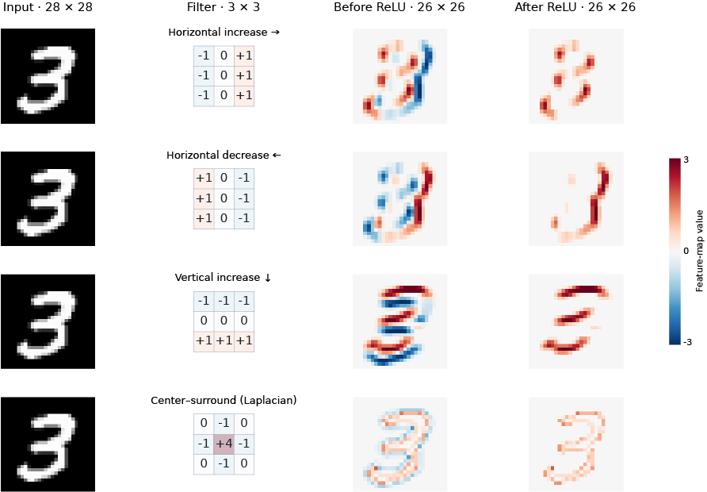
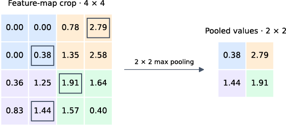
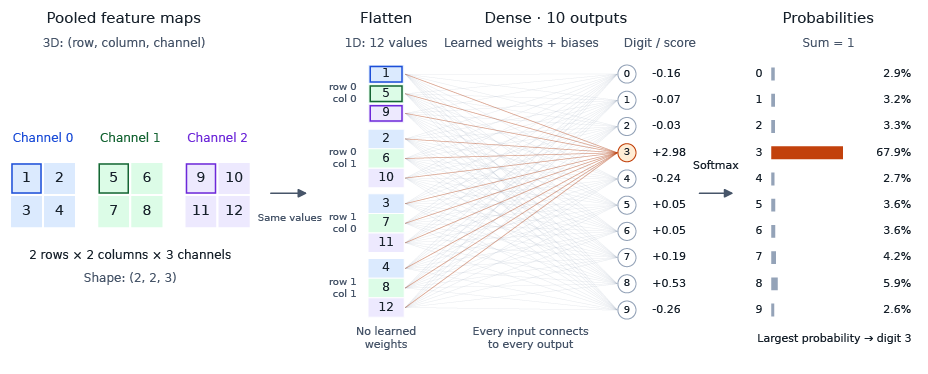

Recognizing handwritten digits with a neural network¶
Last week, we fitted a line or curve to data. We chose a model, adjusted its parameters, and looked at its predictions. Today we use the same idea to recognize handwritten digits.
By the end, you should be able to load images, train a small convolutional neural network (CNN), and check its predictions on new images.
Complete the environment setup first, then run this notebook from top to bottom in that environment. A GPU is not required.
Download for local use: week_6_lectures.zip. Extract both notebooks and all three figures into the same folder. Week 6 uses a local Python environment; follow the environment notebook before running the MNIST notebook.
1. From regression to classification¶
In Week 5, a model predicted a number, such as cortisol concentration. This is regression. Our new model predicts a category: which digit, 0–9, appears in an image. This is classification.
Week 5 |
Today |
|---|---|
Input: time or stimulus intensity |
Input: pixel intensities in an image |
Known output: a measured quantity |
Known output: the digit label |
Model: a line or curve |
Model: a neural network |
Parameters: slope, intercept, etc. |
Parameters: weights and biases |
Fitting |
Training |
Machine learning means learning patterns from examples. Here, each training image comes with its correct digit label. This is called supervised learning. AI is the broader field of making computers perform tasks such as recognizing images and understanding language.
Like curve fitting, training adjusts parameters so predictions agree better with the known outputs. The important question is whether the model also works on examples it did not learn from.
2. What is a CNN?¶
A neural network passes its inputs through a series of layers. Each layer performs a calculation, and the layers with adjustable weights learn during training. Weights multiply inputs and a bias adds an offset, like slope * x + intercept in Week 5.
A CNN uses small filters to look for local patterns in an image. Each filter slides across the image using the same weights at each position. Training changes those weights so the filters become useful for recognizing digits.
Our network has four steps:
image → convolution + ReLU → pooling → flatten → dense + softmax
Convolution: apply filters to small image patches. We use eight filters, each looking at a 3 × 3 patch. Each produces an array of responses called a feature map.
Pooling: keep the largest value in each 2 × 2 region, making the maps smaller.
Flatten: rearrange the maps into one list of values.
Dense: combine those values into ten scores, one for each digit; softmax converts the scores into probabilities.
Two activation functions appear in our code:
ReLU replaces negative values with zero, letting the network express nonlinear relationships.
Softmax turns the final ten scores into probabilities that sum to one.
Convolution and ReLU
These example filters show how different filter shapes produce different feature maps from the same image. ReLU then replaces negative responses with zero.

Max pooling
Each 2 × 2 block contributes its largest value, outlined below. A 4 × 4 crop becomes 2 × 2 pooled values.

Flattening and the dense output layer
Flatten rearranges a 3D array of feature maps into one vector without changing its values. With our channels-last layout, it keeps the channel values of each pixel together. Every value in this vector connects to each of the ten dense outputs through a learned weight. Each output also has a learned bias. Softmax converts the ten resulting scores into digit probabilities.
The figure uses a small numerical example with illustrative weights. In our CNN, each image produces pooled feature maps with shape (13, 13, 8), which become a vector of 13 * 13 * 8 = 1352 values and then ten digit probabilities.

3. Start Python¶
Set the backend before importing Keras. If Keras has already been imported with another backend, restart the kernel first.
import os
os.environ["KERAS_BACKEND"] = "torch"
import keras
import numpy as np
import matplotlib.pyplot as plt
4. Load and inspect MNIST¶
MNIST contains handwritten digits as 28 × 28 grayscale images. Each pixel has an intensity from 0 to 255. Each image also has a label: the correct digit, from 0 to 9.
The loader gives us 60,000 images for developing the model and a separate test set of 10,000 images. We keep the test set aside until training is finished. The first run downloads the data; later runs use the saved copy.
We use the standard names x for inputs and y for labels. The suffix _raw marks the original data, which we keep for inspection and preparation.
(x_train_raw, y_train_raw), (x_test_raw, y_test) = keras.datasets.mnist.load_data()
print("Image array:", x_train_raw.shape)
print("Label array:", y_train_raw.shape)
In (60000, 28, 28), the axes are image number, row, and column. Selecting x_train_raw[0] gives the first image. Its label is y_train_raw[0].
i = 0
plt.imshow(x_train_raw[i], cmap="gray")
plt.title(f"Digit label: {y_train_raw[i]}")
plt.axis("off")
plt.show()
Exercise 1 — inspect multiple images
We want to inspect multiple images at once. Use x_train_raw and y_train_raw to display 16 images with their digit labels in a 4 × 4 grid.
# Display 16 labeled images in a 4 × 4 grid here.
5. Prepare the images¶
We use 15,000 of the available images to keep training short. Keras will hold back 20% of these — 3,000 images — as validation data. The other 12,000 images will train the model.
Training data: examples used to adjust the weights.
Validation data: examples used to check progress and choose how long to train.
Test data: separate examples used for the final evaluation.
First, convert the pixels to floating-point numbers and divide by 255 to put them between 0 and 1. Then add a final dimension for the single grayscale channel. The network expects (image, row, column, channel).
reshape changes the arrangement of the array without changing its pixel values. len(x_train) keeps the existing number of images. We prepare the images from the raw arrays, so rerunning the next cell does not scale already normalized images a second time.
x_train = x_train_raw[:15000].astype("float32") / 255
y_train = y_train_raw[:15000]
x_test = x_test_raw.astype("float32") / 255
x_train = x_train.reshape(len(x_train), 28, 28, 1)
x_test = x_test.reshape(len(x_test), 28, 28, 1)
print("Network input shape:", x_train.shape)
6. Build the network¶
Sequential applies the layers in order. Input specifies the shape of one image. The last layer has ten outputs, because there are ten possible digit labels.
The random seed gives us the same starting weights when we rebuild the model for the training exercise.
keras.utils.set_random_seed(715)
model = keras.Sequential([
keras.Input(shape=(28, 28, 1)),
keras.layers.Conv2D(8, (3, 3), activation="relu"),
keras.layers.MaxPooling2D((2, 2)),
keras.layers.Flatten(),
keras.layers.Dense(10, activation="softmax"),
])
model.summary()
End of Session 1: point to each layer in the code and explain its job. Which parts contain weights that training will change?
If you close the notebook between sessions, rerun the cells above before continuing.
7. Train the network¶
First, compile sets up training:
Optimizer:
adamis the algorithm that adjusts the weights.Loss: a number measuring how poorly predictions match the correct labels. Lower is better. In Week 5 we used MSE; here we use
sparse_categorical_crossentropy, a loss for classification with integer labels.Metric:
accuracyis the fraction of images classified correctly. An accuracy of 0.95 means 95% correct.
model.compile(
optimizer="adam",
loss="sparse_categorical_crossentropy",
metrics=["accuracy"],
)
fit trains the model. One epoch is one pass through the training images. A batch is a smaller group of images processed for one weight update.
We start with three epochs and batches of 128 images. validation_split=0.2 holds aside the last 20% of our 15,000 images before training. Validation images do not update the weights.
history stores the training results so we can plot them.
history = model.fit(
x_train, y_train,
epochs=3,
batch_size=128,
validation_split=0.2,
verbose=2,
)
8. Check learning progress¶
Compare accuracy on the training and validation images. We want the model to improve on images it did not train on.
Training accuracy is averaged during each epoch. Validation accuracy is measured afterward, using the updated weights.
If training performance improves while validation performance gets worse, the model may be overfitting: learning details specific to the training examples. Our short run may not show this pattern.
epochs = range(1, len(history.history["accuracy"]) + 1)
plt.plot(epochs, history.history["accuracy"], "o-", label="Training")
plt.plot(epochs, history.history["val_accuracy"], "o-", label="Validation")
if len(epochs) <= 10:
plt.xticks(epochs)
plt.xlabel("Epoch")
plt.ylabel("Accuracy")
plt.ylim(0, 1)
plt.legend()
plt.show()
Exercise 2 — does more training help?
Record the final training and validation accuracy after three epochs. Repeat the experiment with epochs=30 and then epochs=100 in fit. Longer runs may take several minutes on your computer.
For each experiment, start again from Section 6, which creates a fresh model, and rerun Sections 6–8. Repeating only fit would continue training the existing model.
Epochs |
Training accuracy |
Validation accuracy |
|---|---|---|
3 |
… |
… |
30 |
… |
… |
100 |
… |
… |
Did validation accuracy improve? Choose which training duration to keep before going on to the test set. If your chosen duration differs from the last run, set epochs to that duration and rebuild and train the model again from Section 6. Use this chosen model in Section 9.
9. Evaluate new images¶
Now evaluate the chosen model on the 10,000 test images. evaluate calculates loss and accuracy without changing the weights.
For comparison, guessing uniformly among ten digits gives about 10% correct on average.
Use test results to report final performance. Changing the model to improve this score would make the test set part of model development.
test_loss, test_accuracy = model.evaluate(x_test, y_test, verbose=0)
print(f"Test loss: {test_loss:.3f}")
print(f"Test accuracy: {test_accuracy:.1%}")
10. Look at individual predictions¶
predict returns one row per image and ten columns, one for each digit. argmax(axis=1) gives the column with the largest probability in each row. That column number is the predicted digit.
probabilities = model.predict(x_test, verbose=0)
predictions = probabilities.argmax(axis=1)
image_number = 0
plt.imshow(x_test[image_number, :, :, 0], cmap="gray")
plt.title(f"Actual: {y_test[image_number]}, predicted: {predictions[image_number]}")
plt.axis("off")
plt.show()
The bar plot shows the probabilities assigned to the ten digits for this image. A large value means the model favors that digit; a confident guess can still be wrong.
plt.bar(range(10), probabilities[image_number])
plt.xticks(range(10))
plt.xlabel("Digit")
plt.ylabel("Model probability")
plt.ylim(0, 1)
plt.show()
Exercise 3 — inspect a mistake
np.where below finds the image indices where the prediction differs from the label. We print the first ten of those indices.
wrong = np.where(predictions != y_test)[0]
print("Misclassified image indices:", wrong[:10])
If any indices are printed, choose one as image_number and rerun the image and bar-plot cells above.
Can you see why the model might have confused the digit?
Is the largest probability close to 1, or is the model uncertain?
What can this example tell you that overall accuracy cannot?
Use these errors to describe this model. If you use them to redesign it, you will need a new untouched test set for an independent final evaluation.
Recap¶
We chose a model, fitted its parameters, and checked its predictions — the same basic process as Week 5. Our inputs were images, and our predictions were digit categories.
Explain in your own words:
What does training change in the network?
Why are there ten outputs?
What are the different jobs of training, validation, and test data?
A good MNIST score describes performance on similar handwritten digits. It does not guarantee success on different kinds of images.
Further reading: Keras MNIST example and training and evaluation.